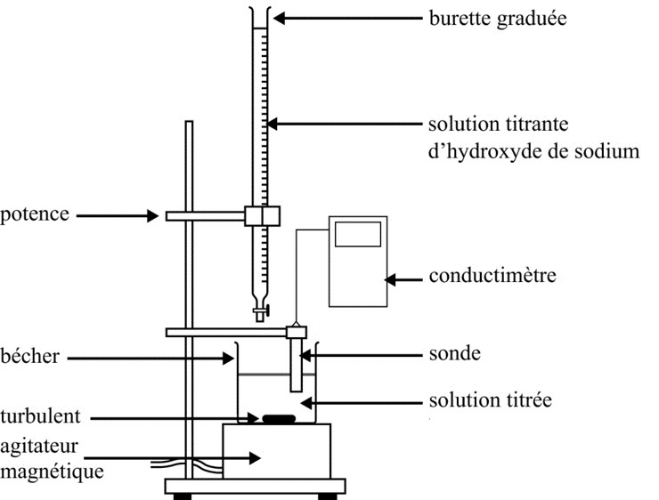
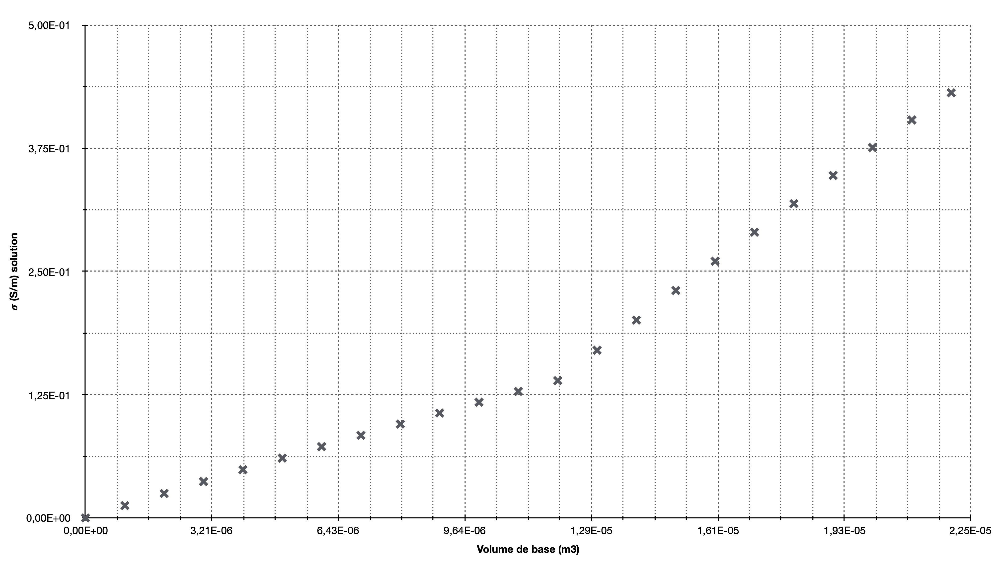
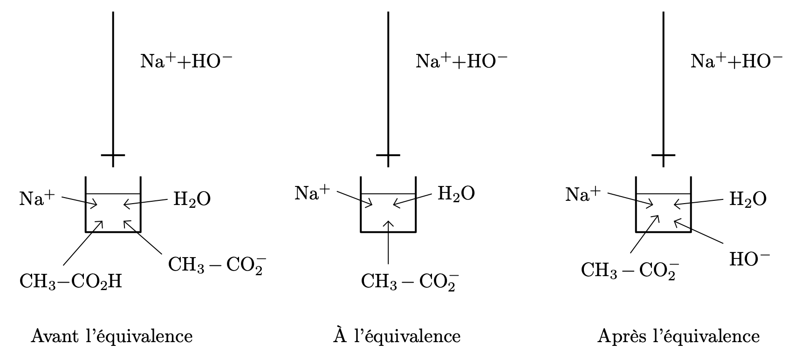

Documents
Composition du vinaigre issu d’une solution aqueuse d’éthanol
La plupart des vinaigres issus d’une solution aqueuse d’éthanol ont une teneur en acide acétique d’environ 5 à 8 % en masse ainsi que de faibles teneurs en acide tartrique et acide citrique. Le potentiel hydrogène ou $pH$ de ces vinaigres est généralement de l’ordre de 3, avec un minimum d’environ 2.
Les quantités minoritaires d’autres composés organiques, à l’origine de caractéristiques organoleptiques spécifiques, dépendent de la nature de la solution initiale ainsi que du mode d’élaboration et d’un éventuel élevage sous bois : acide gallique, 4-hydroxybenzaldéhyde, catéchine, acide vanillique, acide caféique, acide syringique, vanilline, syringaldéhyde, acides coumariques (paracoumarique, orthocoumarique et métacoumarique), méthoxybenzaldéhyde, acide sinapique, salicylaldéhyde, scopolétol, vératraldéhyde, etc.
Acide acétique
L’acide acétique ou acide éthanoïque est un acide carboxylique avec une chaîne carbonée théorique en $\ce{C2}$, analogue à l’éthane, de masse molaire $\pu{60 g.mol-1}$ et de formule chimique brute $\ce{C2H4O2}$ ou semi-développée $\ce{CH3-CO-OH}$. L’adjectif du nom courant provient du latin acetum, signifiant vinaigre. En effet, l’acide acétique représente le principal constituant du vinaigre après l’eau, puisqu’il lui donne son goût acide et son odeur piquante. [$\ldots$] Son acidité caractérisée en solution aqueuse par un $pKa = \pu{4.76}$ vient de sa capacité à perdre temporairement le proton de sa fonction carboxylique, le transformant ainsi en ion acétate $\ce{CH3COO^-}$. C’est un acide faible.
Équivalence d’un titrage
- On appelle équivalence d’un titrage le point du titrage où on change de réactif limitant.
- À l'équivalence les réatifs ont été introduits dans les proportions stœchiométriques.
Objectif
L’objectif de cette séance est de déterminer la concentration en acide acétique dans un vinaigre commercial et de vérifier si les informations données dans le document 1 sont correctes.
Partie expérimentale
Données
-
Conductivités molaires ioniques : $\lambda _{\ce{OH^-}} = \pu{19,8 mS.m2.mol-1}$, $\lambda _{\ce{H3O^+}} = \pu{35,0 mS.m2.mol-1}$, $\lambda _{\ce{CH3COO^-}} = \pu{4,1 mS.m2.mol-1}$, $\lambda _{\ce{Na^+}} = \pu{5,0 mS.m2.mol-1}$.
-
Masse volumique du vinaigre commercial : $\rho = \pu{1,01 kg.L-1}$.
Protocole

- On verse, dans un bécher de $\pu{400 mL}$, $\pu{20 mL}$ d’un vinaigre blanc commercial, dilué 10 fois, prélevé à l’aide d’une pipette jaugée.
- On ajoute dans ce même bécher un volume de $\pu{250 mL}$ d’eau distillée.
- On plonge la sonde d’un conductimètre dans le bécher.
- Dans une burette graduée, on introduit une solution de soude $(\ce{Na^+{(aq)} + OH^-{(aq)}})$ de concentration $C_B = \pu{0,2 mol.L-1}$.
- On verse millilitre par millilitre la solution de soude dans le bécher jusqu’à un volume de $\pu{22 mL}$. On mesure pour chaque ajout la conductivité de la solution.
Résultats

Exploitation
- Écrire l’équation de la réaction de titrage entre l’acide acétique et les ions hydroxyde de la solution de soude.
Réponse
$ \ce{ CH3-CO2H(aq) + HO^-(aq) -> CH3-CO2^-(aq) + H2O} $
- Quelles propriétés doit présenter une réaction chimique utilisée pour réaliser un titrage ?
Réponse
Une réaction chimique utilisée pour réaliser un titrage doit :
- être rapide ;
- être unique dans le milieu réactionnel (c’est la seule qui doit consommer le titré) ;
- doit conduire à des transformations chimiques totales.
- Pourquoi la conductivité de la solution est-elle très petite au début du titrage ?
Réponse
Nous allons voir dans quelques semaines que l’acide acétique réagit très peu avec l’eau. Sa solubilisation dans l’eau, d’équation $\ce{ CH3-CO2H(aq) + H2O <=> CH3-CO2^-(aq) + H3O^+}$ conduit donc à la formation de très peu d’ions acétate et oxonium.
La conductivité de cette solution est donc très petite.
- Pourquoi la conductivité de la solution augmente-t-elle dès que l’on introduit un peu de soude dans la solution ?
Réponse
Dès l’introduction de soude (réactif alors limitant), il y a, dans la solution, formation d’ions acétate et apparition d’ions sodium. La solution est donc plus conductrice.
- Donner, de façon qualitative, la composition du bécher :
- avant l’équivalence ;
- à l’équivalence ;
- après l’équivalence.
Réponse

- Établir un tableau d’avancement pour chacune des phases décrites ci-dessus.
Réponse
| État | Av. | $\ce{CH3CO2H}$ | + | $\ce{HO^-}$ | $\ce{->}$ | $\ce{CH3CO2^-}$ | + | $\ce{H2O}$ | ▍ | $\ce{Na^+}$ |
|---|---|---|---|---|---|---|---|---|---|---|
| Initial | 0 | $n_A=C_AV_A$ | $n_B=C_BV_B$ | 0 | excès | ▍ | $n_B$ | |||
| Avant Équiv. | $x$ | $n_A - x$ | 0 | $x$ | excès | ▍ | $n_B$ | |||
| À Équiv. | $x_E$ | $n_A - x_E = 0$ | $n_B - x_E = 0$ | $x_E$ | excès | ▍ | $n_B$ | |||
| Après Équiv. | $x$ | 0 | $n_B - x_E$ | $x_E$ | excès | ▍ | $n_B$ |
- À partir des tableaux d’avancement écrire les expressions des conductivités $\sigma$ de la solution en fonction des concentrations molaires des différentes entités chimiques :
- avant l’équivalence ;
- à l’équivalence ;
- après l’équivalence.
Réponse
- Avant l’équivalence : $\sigma_{\text{av}} = \lambda _{\ce{Na^+}} [\ce{Na^+}] + \lambda _{\ce{CH3CO2^-}} [\ce{CH3CO2^-}]$
- À l’équivalence : $\sigma_{\text{E}} = \lambda _{\ce{Na^+}} [\ce{Na^+}] + \lambda _{\ce{CH3CO2^-}} [\ce{CH3CO2^-}]$
- Après l’équivalence : $\sigma_{\text{ap}} = \lambda _{\ce{Na^+}} [\ce{Na^+}] + \lambda _{\ce{CH3CO2^-}} [\ce{CH3CO2^-}] + \lambda _{\ce{OH^-}} [\ce{OH^-}]$
- Justifier l’allure de la courbe $\sigma = f(V_B)$.
Réponse
Remarque préalable
- Le volume de la solution est : $V_{\text{total}} = V_A + V_{\text{eau}} + V_B$. Ce volume varie donc au fur et à mesure que l’on ajoute de la soude ($V_B$).
Cependant, si on relit plus attentivement le protocole, on remarque que $V_{\text{eau}} + V_A \gg V_B$, donc $V_{\text{total}} \approx V_{\text{eau}} + V_A$. Le volume de la solution reste constant pendant tout le titrage.
- Lors d’un titrage conductimétrique, on ajoute généralement une grande quantité d’eau (le solvant) au début du titrage, de façon à pouvoir considérer que le volume de la solution reste constant tout au long du titrage.
- Puisque le volume de la solution reste constant, tout raisonnement basé sur les quantités de matière conduit à la même conclusion que le même raisonnement basé sur les concentrations molaires.
Raisonnement qualitatif (celui à préférer)
- Avant l’équivalence : $\sigma_{\text{av}} = \lambda _{\ce{Na^+}} [\ce{Na^+}] + \lambda _{\ce{CH3CO2^-}} [\ce{CH3CO2^-}]$.
Dans cette phase du titrage, les quantités de matière de $\ce{Na^+}$ et de $\ce{CH3CO2^-}$ augmentent ; la conductivité $\sigma_{\text{av}}$ augmente donc aussi. - Après l’équivalence : $\sigma_{\text{ap}} = \lambda _{\ce{Na^+}} [\ce{Na^+}] + \lambda _{\ce{CH3CO2^-}} [\ce{CH3CO2^-}] + \lambda _{\ce{OH^-}} [\ce{OH^-}]$.
Dans cette phase, les quantités de matières de $\ce{Na^+}$ et $\ce{OH^-}$ augmentent et la quantité de matière de $\ce{CH3CO2^-}$ reste constante ; la conductivité $\sigma_{\text{ap}}$ augmente donc aussi. - De plus, comme $\lambda_{\ce{OH^-}} \gg \lambda_{\ce{CH3CO2^-}}$, l’augmentation de $\sigma_{\text{ap}}$ se fait avec une pente plus importante que l’augmentation de $\sigma_{\text{av}}$.
Raisonnement rigoureux (à lire une fois dans sa vie)
- Avant l’équivalence :
$\sigma_{\text{av}} = \lambda _{\ce{Na^+}} [\ce{Na^+}] + \lambda _{\ce{CH3CO2^-}} [\ce{CH3CO2^-}]$
$\sigma_{\text{av}} = \lambda _{\ce{Na^+}} \left(\dfrac{C_B V_B}{V_A + V_{\text{eau}} + V_B}\right) + \lambda _{\ce{CH3CO2^-}} \left(\dfrac{x}{V_A + V_{\text{eau}} + V_B}\right)$
Comme $x=C_B V_B$ et $V_A + V_{\text{eau}} + V_B \approx V_{\text{eau}} + V_A = V_{\text{total}}$ est un volume constant,
$\sigma_{\text{av}} = \lambda _{\ce{Na^+}} \left(\dfrac{C_B V_B}{V_{\text{total}}}\right) + \lambda _{\ce{CH3CO2^-}} \left(\dfrac{C_B V_B}{V_{\text{total}}}\right)$
$\sigma_{\text{av}} = (\lambda _{\ce{Na^+}} + \lambda _{\ce{CH3CO2^-}}) \left(\dfrac{C_B V_B}{V_{\text{total}}}\right)$
$\sigma_{\text{av}}$ est une fonction linéaire de $V_B$, de pente $(\lambda _{\ce{Na^+}} + \lambda _{\ce{CH3CO2^-}}) \dfrac{C_B}{V_{\text{total}}}$.
- Après l’équivalence :
$\sigma_{\text{ap}} = \lambda _{\ce{Na^+}} [\ce{Na^+}] + \lambda _{\ce{CH3CO2^-}} [\ce{CH3CO2^-}] + \lambda _{\ce{OH^-}} [\ce{OH^-}]$
$\sigma_{\text{ap}} = \lambda _{\ce{Na^+}} \left( \dfrac{C_B V_B}{V_{\text{total}}} \right) + \lambda _{\ce{CH3CO2^-}} \left( \dfrac{C_B V_{BE}}{V_{\text{total}}} \right) + \lambda _{\ce{OH^-}} \left( \dfrac{C_B V_B - C_B V_{BE}}{V_{\text{total}}} \right)$
$\sigma_{\text{ap}} = (\lambda _{\ce{CH3CO2^-}} - \lambda _{\ce{OH^-}}) \left( \dfrac{C_B V_{BE}}{V_{\text{total}}} \right) + (\lambda _{\ce{Na^+}} + \lambda _{\ce{OH^-}}) \left( \dfrac{C_B V_B}{V_{\text{total}}} \right)$
$\sigma_{\text{ap}}$ est fonction affine de $V_B$, de pente $(\lambda _{\ce{Na^+}} + \lambda _{\ce{OH^-}}) \dfrac{C_B}{V_{\text{total}}}$.
- Comparaison des pentes : comme $\lambda_{\ce{OH^-}} \gg \lambda_{\ce{CH3CO2^-}}$, la pente de $\sigma_{\text{ap}}$ est plus importante que celle de $\sigma_{\text{av}}$.
- En déduire la concentration en acide acétique dans le vinaigre blanc.
Réponse
-
À la question précédente, on a constaté un comportement différent pour la conductivité, avant et après l’équivalence. Cette dernière se trouve à l’intersection des deux droites qui modélisent ces comportements.
-
Si on trace les deux droites, on obtient $V_{BE} = \pu{11,8 mL}$.
-
Comme l’équivalence est le point du titrage où on change de réactif limitant, $x_E = C_B V_{BE}$ et $x_E = C_A V_A$, donc $C_B V_{BE} = C_A V_A \Leftrightarrow C_A = C_B \dfrac{V_{BE}}{V_A}$
A.N. $C_A = \pu{0,2 mol.L-1} \times \dfrac{\pu{11,8 mL}}{\pu{20 mL}} = \pu{1,2e-1 mol.L-1}$ -
Comme le vinaigre a été dilué 10 fois, la concentration en acide acétique dans le vinaigre vaut $\pu{1,2 mol.L-1}$ ou $\pu{1,2 mol.L-1} \times (2 \times \pu{12,0 g.mol-1} + 4 \times \pu{1,0 g.mol-1} + 2 \times \pu{16,0 g.mol-1}) = \pu{72 g.L-1}$.
-
La masse volumique du vinaigre vaut $\pu{1,01 kg.L-1}$, on constate donc que l’acide acétique représente 7,1 % de cette masse, ce qui est conforme à l’information donnée dans le document 1.